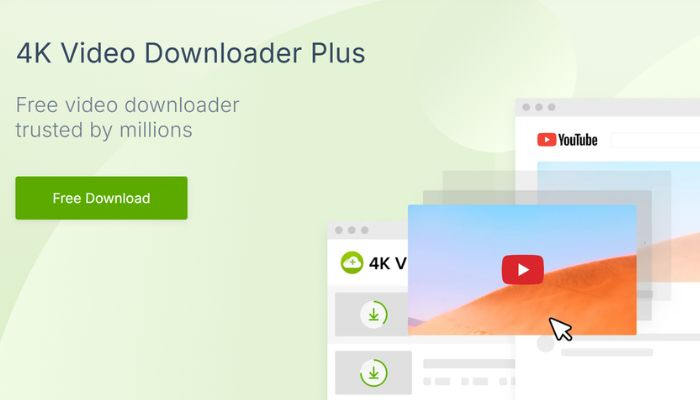
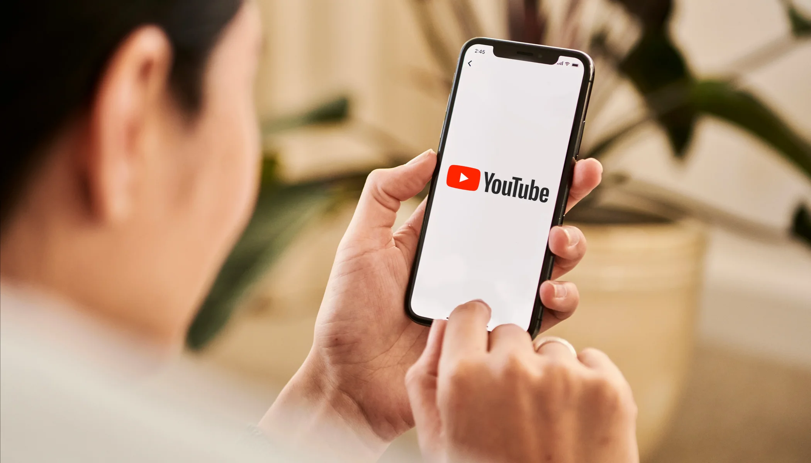
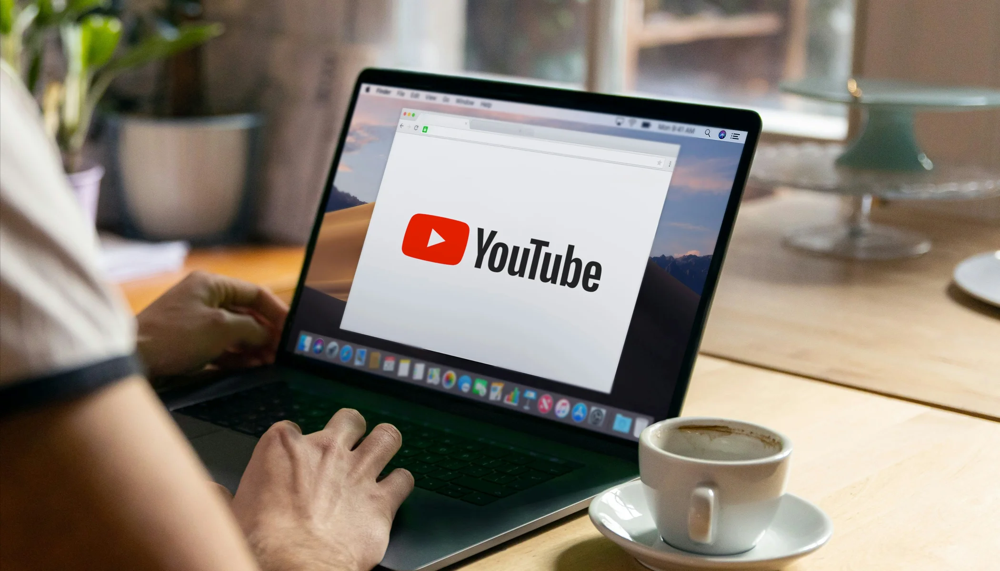

2025年如何下载YouTube视频：完整指南

如今，YouTube 已成为全球最受欢迎的视频平台。但有时，我们会发现自己无法访问互联网，或者只是想将喜爱的视频离线保存，以便随时轻松观看。
幸运的是，现在有很多在线服务和软件工具可以轻松从 YouTube 下载视频，其中很多都是完全免费的。这些工具不仅用户友好，而且支持各种格式和分辨率，以满足不同的需求。
如果你也在寻找下载 YouTube 视频的最佳方式，请跟随我们探索一些简单有效的方法，让你的观看体验更加便捷!
如何使用 YouTube Premium 下载视频
作为 YouTube 的普通用户，我仍然认为 YouTube Premium 是下载视频最简单、最安全的方式之一，至少如果你不介意价格的话。
订阅后，你只需在手机或平板电脑上点击"下载"按钮即可保存你喜爱的视频。无论你是在出国旅行、通勤途中，还是暂时离线，都可以随时观看，享受无广告干扰的流畅体验。
话虽如此，但也有一些限制。下载的视频只能在 YouTube 应用内播放，无法保存或导出到其他地方，而且你需要定期重新连接到互联网才能保持视频处于活动状态。
在我看来，如果你经常使用 YouTube 或经常需要离线访问，YouTube Premium 是一个省心的选择。无需安装额外的工具，也不用担心版权或安全问题。
更实惠的订阅选项
如果你发现 YouTube Premium 的官方定价有点高，实际上还有一种更经济实惠的选择——你可以通过可靠的帐户共享平台订阅，并以更低的成本享受同样的好处。
我个人通过 环球巴士 订阅了YouTube Premium，只花了原价的一小部分，同时仍然可以获得所有高级功能，如离线下载、后台播放和无广告体验。
环球巴士 是一个知名的数字订阅共享平台。它易于使用，支持多种支付方式，而且账户非常稳定——非常适合像我这样想要省钱又不牺牲体验的用户。如果你也在寻找更实惠的订阅方式，环球巴士 绝对值得一试。
如何下载YouTube视频到你的电脑
即使分享平台提供折扣订阅，有些人可能仍然觉得价格有点高。好在也有免费的方式下载 YouTube 视频。这些方式通常需要第三方工具，提供灵活的下载选项，支持多种格式和分辨率，可以满足各种用户需求。
4K 视频下载器(Windows/macOS/Linux)
4K 视频下载器是一款专为下载高质量视频而设计的桌面工具，由 4K Download 团队开发。它适用于 Windows、macOS 和 Ubuntu，界面简洁，控制直观，即使是初学者也能轻松上手。
无论你是想下载单个视频、整个播放列表，还是仅提取音频和字幕，它都能流畅可靠地完成任务。对于经常从 YouTube 或其他平台保存内容的用户来说，它是一个可靠的选择。
它提供哪些功能？
我发现 4K 视频下载器最令人印象深刻的是它对视频质量的卓越支持——你可以轻松下载 1080p、4K 甚至 8K 的视频，所有这些都在免费版本中提供。
它还支持批量下载整个播放列表或频道。只需粘贴链接，软件就会自动检测所有视频，并让你一键下载，无需逐个复制粘贴链接。
我也经常用它来提取MP3音频——它特别适合用来保存背景音乐或播客。它也支持字幕下载，包括原版字幕和翻译字幕，这对语言学习者来说很有帮助。
另一个有用的功能是"智能模式"，它可以让你预设你喜欢的格式、质量和保存位置，从而使整个过程更加高效。
4K 视频下载器提供 免费版 和一次性购买的 专业版，专业版售价约为 15 美元 。免费版涵盖了大多数核心功能，但 3D 视频下载和每日无限下载等高级选项只有升级到专业版后才能使用。
如何安装和使用它
你可以直接从其官方网站下载并安装 4K 视频下载器——它支持 Windows、macOS 和 Ubuntu (Linux)，无需 Google Play 商店。只需访问该网站，选择适合你系统的版本，然后按照安装步骤操作即可。
安装完成后，只需复制所需视频的链接，打开软件，然后点击"粘贴链接"。软件会自动分析视频，并显示可用的格式和分辨率(例如 MP4、1080p、4K 甚至 8K)。选择你的偏好设置，然后点击"下载"。
如果你想下载整个播放列表或频道，只需复制相应的链接即可。软件会检测所有视频，并将它们批量下载到你预设的文件夹中，让下载过程快速便捷。
ClipGrab(Windows / macOS / Linux)
ClipGrab 是一款开源视频下载器，适用于 Windows、macOS 和 Linux。它界面简洁，设计轻巧，安装快捷，无需复杂的设置。作为一款维护良好的免费工具，它深受用户欢迎，是日常休闲使用的理想之选。
它与 4K 视频下载器有何不同？
最大的区别在于 ClipGrab 完全 免费 ——无需升级到专业版即可解锁全部功能。这对于预算有限或偶尔下载视频的用户来说尤其有吸引力。
ClipGrab 还提供了更简洁、更流畅的界面，没有广告或附加销售，非常适合新手使用。虽然它通常支持高达 1080p 的下载(不像 4K 视频下载器那样支持 4K 或 8K)，但它内置了视频转换功能。你可以轻松地将下载内容转换为 MP3、WMV 或 OGG 等格式，这对于提取音频或确保兼容性非常方便。
如何安装和使用 ClipGrab
ClipGrab 的安装和使用方式与 4K Video Downloader 几乎完全相同。只需从官方网站下载相应的版本，然后按照简单快捷的设置流程操作即可。
安装完成后，你只需复制所需的视频链接并粘贴到软件中即可开始下载。ClipGrab 还允许你选择格式和分辨率，无需注册或登录，使用极其方便。
如何在安卓设备上下载 YouTube 视频
除了将视频保存在电脑上之外，许多用户还希望能够将 YouTube 视频直接下载到手机或平板电脑上，以便随时随地离线观看。
在接下来的章节中，我将指导你如何在 Android 和 iOS 设备上下载 YouTube 视频。如果你正在寻找，请继续阅读!
TubeMate
TubeMate 是一款专为安卓设备设计的 YouTube 视频下载应用。它允许用户直接在手机上浏览和保存在线视频，无需电脑或网页端工具。其界面与 YouTube 的移动版非常相似，并且完全 免费使用 ，对于喜欢在手机上离线观看视频的用户来说，它是一个绝佳的选择。
核心功能概述
它支持从 YouTube 下载高清视频(最高可达 4K)，并允许你选择 MP3 等音频格式。与 4K Video Downloader 类似，它不仅支持单个视频下载，还支持批量下载，使用户可以一次性下载整个播放列表或频道，从而大大提高下载效率。
需要注意的是：TubeMate 在 Google Play 商店中不可用。你需要从其官方网站或可信的第三方来源手动下载 APK 安装文件。这是由于 Google 对视频下载应用的政策限制，而非因为 TubeMate 本身存在任何违法行为。
安装方法
由于 TubeMate 在 Google Play 商店中不可用，你需要手动下载并安装 APK 文件。只需在手机浏览器中打开官方网站，点击"下载"，然后选择一个可用的镜像即可获取 APK 文件。
如果你是第一次在 Google Play 之外安装应用，你的设备可能会显示"安装来自未知来源的应用"的警告。只需转到"设置"，启用"允许来自此来源的应用"选项，然后返回继续安装。
如何使用
安装后，你可以直接在应用内搜索并播放视频。找到想要下载的视频后，只需点击播放屏幕上的下载按钮，选择你喜欢的分辨率和格式，即可开始下载。
下载的视频会自动保存到你的"视频"或"下载"文件夹中，你可以使用手机的文件管理器或任何第三方视频播放器访问它们。当然，你也可以直接使用 TubeMate 的内置媒体播放器观看，无需切换到其他应用。
新管道
与 TubeMate 类似，NewPipe 是另一款功能强大的 Android 版 YouTube 视频下载器。两者都允许用户下载视频、选择分辨率并提取音频以供离线使用。NewPipe 支持 144p 到 1080p 的下载、MP3 转换和后台播放，而且完全 免费 且开源。
NewPipe 与 TubeMate 有何不同
NewPipe 的一个主要优势是它不依赖任何 Google 服务，这意味着即使在没有安装 Google Play 或 Google 服务的设备上它也能完美运行。
虽然 TubeMate 也可以在没有 Google 服务的情况下运行和下载视频，但它的某些功能(例如自动更新或与 Google Play 相关的某些功能，例如广告或 YouTube 登录)在该环境中可能会受到限制或不可用。
安装和使用概述
由于 NewPipe 尚未在 Google Play 商店上架，你需要从其官方网站或值得信赖的第三方来源下载 APK 文件。下载后，请确保启用"允许从未知来源安装"选项，然后点击 APK 文件开始安装。
安装完成后，打开 NewPipe 应用，像在 YouTube 上一样浏览或搜索视频。找到想要下载的视频后，点击下载按钮，选择你喜欢的格式和分辨率，视频就会直接保存到你设备的存储空间。
如何在不安装任何软件的情况下下载 YouTube 视频
如果你不想在手机或电脑上安装任何其他应用程序，你也可以使用各种在线工具直接下载 YouTube 视频。
Y2Mate.com
Y2Mate.com 是一款 免费的 网页视频下载器，可让你从 YouTube 等平台下载视频或音频内容，无需安装软件。只需粘贴视频链接，选择你喜欢的格式和分辨率，即可开始下载。它易于使用，并支持各种浏览器和设备。
功能和限制
Y2Mate 提供多种格式选项，包括 MP4、3GP、WEBM 和 MP3，以满足不同的需求。它兼容大多数主流浏览器，例如 Google Chrome、Mozilla Firefox、Safari、Microsoft Edge 和 Opera。你只需在浏览器中打开 Y2Mate 网站，粘贴 YouTube 视频链接，即可轻松下载视频或音频。
Y2Mate 最大的优势在于无需安装任何软件，非常适合快速下载单个视频或音频文件。其界面简洁易用，即使没有技术经验的用户也能轻松上手。然而，它在批量下载和高分辨率视频方面存在局限性。如果你需要下载大量文件或需要全高清或 4K 画质，Y2Mate 可能并非最佳选择。
Y2Mate 使用分步指南
只需复制视频链接并粘贴到 Y2Mate.com 的输入框中即可。网站将自动分析链接，并显示可用的格式和分辨率列表(最高支持 1080p)。你还可以选择将音频提取为 MP3 文件。
选择好选项后，点击"下载"即可开始。如果你正在寻找一种快速、无需安装的视频下载方式，Y2Mate 绝对值得一试。
SaveFrom.net
SaveFrom.net 与 Y2Mate.com 类似，是一款 免费的 在线 YouTube 视频下载器，无需安装，可直接在浏览器中使用。其功能非常相似——只需粘贴视频链接、选择格式并下载即可。
然而，值得注意的是，SaveFrom.net 已于 2020 年 4 月 6 日起停止在美国提供服务。即便如此，它仍然是其他地区用户的一个不错的选择。
它与 Y2Mate.com 有何不同
SaveFrom.net 支持更广泛的平台——不仅支持 YouTube，还支持 Instagram、TikTok、Twitter 等，对于想要保存来自不同社交媒体网站内容的用户来说，它是一个绝佳的选择。另一方面，Y2Mate 更专注于 YouTube，并提供更详细的格式选项和更流畅的视频和音频下载用户界面。
如何使用
使用方法与Y2Mate.com几乎相同。
如何在 iOS 设备上下载 YouTube 视频
iOS 系统不支持通过应用直接从 YouTube 下载视频，但你可以使用Documents by Readdle(一款功能强大的文件管理应用)轻松解决此问题。除了整理文件外，它还内置浏览器，方便你访问 SaveFrom.net 或 Y2Mate(如前所述)等视频下载网站。这使得将 YouTube 视频保存到 iOS 设备成为一种实用且相对简单的方法。
安装和使用方法
首先，在 iPhone 或 iPad 上打开 App Store，搜索"Documents by Readdle"。点击即可下载并安装——通常只需几分钟。安装完成后，你会在主屏幕上看到 Documents by Readdle 图标。点击即可启动该应用。
首次打开该应用时，它会引导你完成一些基本的设置步骤，例如授予文件和存储权限——这些权限是保存下载文件所必需的。设置完成后，你就可以使用应用的内置浏览器和文件管理器开始下载视频了。
在Documents by Readdle的内置浏览器中，访问 SaveFrom.net 或 Y2Mate，粘贴要下载的 YouTube 视频链接，选择你喜欢的格式和分辨率，然后点击"下载"。视频将直接保存到应用的下载文件夹中，你可以随时访问和播放。整个过程快速简单，无需额外配置。
结论
虽然有很多免费的方式可以下载 YouTube 视频，但最方便、最可靠的选择仍然是订阅 YouTube Premium。
订阅高级版后，你可以直接在 YouTube 应用内下载视频以供离线观看，完全无广告干扰，享受流畅无忧的体验。相比之下，TubeMate 或 Documents by Readdle 等第三方工具也能完成下载，但它们通常需要更多步骤，并且可能存在隐私或安全问题。
如果你觉得单独订阅 YouTube Premium 不划算，可以考虑通过共享订阅来降低费用。通过与他人共享帐户，你可以分摊费用，同时仍然享受 YouTube Premium 的所有福利。
环球巴士提供了一个值得信赖的平台，帮助用户以更实惠的价格分享 YouTube Premium 订阅。
如果你希望享受无广告视频、视频下载和后台播放(无需支付全价)，请立即前往 环球巴士，选择适合你需求的共享计划，以更低的价格开始享受完整的 YouTube Premium 体验!
常问问题
如何合法地从 YouTube 下载视频？
想要合法下载 YouTube 视频，订阅 YouTube Premium 是最佳选择。它允许直接在应用内进行离线下载。你还可以下载获得知识共享许可的视频或你拥有的视频，同时遵守版权法和 YouTube 的服务条款。
如何从 YouTube 下载并保存视频？
要从 YouTube 下载并保存视频，请订阅 YouTube Premium，以便直接在应用内下载视频以供离线观看。或者，你也可以使用在线工具下载获得知识共享许可的视频或你自己的内容，但请确保遵守 YouTube 的服务条款和版权法。
如何将 YouTube 上的视频下载到我的电脑上？
要将 YouTube 视频下载到电脑，请尝试 4K 视频下载器。它可以让你轻松下载不同格式和分辨率的视频、播放列表和频道。只需复制视频网址，粘贴到应用中，然后选择所需的格式和画质即可开始下载。